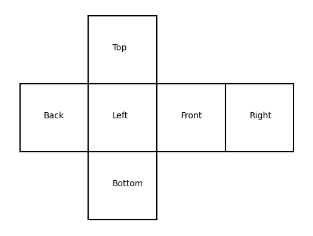

Main
Images from the Wide Field Cameras
Click on the images for the data on that part of the sky!
Back Camera Image

'Right' joins the left of this image, and 'Left' the right.
Bottom Camera Image

'Left' joins the top of this image, 'Front' the right, 'Right' the bottom, and 'Back' the left.
Front Camera Image

'Left' joins the left of this image, and 'Right' the right.
Left Camera Image

'Back' joins the left of this image, and 'Front' the right.
Right Camera Image

'Front' joins the left of this image, and 'Back' the right.
Top Camera Image

'Right' joins the top of this image, 'Front' the right, 'Left' the bottom, and 'Back' the left.
Cubemap Image Alignment

Variable Star Data
Some stars in the sky were found to change in apparent brightness over time, usually following a periodic trend.

Example of a variable star lightcurve - star BackS61625 Units of the variable data are:
| Measurement | Unit |
|---|---|
| Time | hours |
| Normalised Flux | unitless |
Uncertainties in this data (one standard deviation) are:
| Measurement | Uncertainty |
|---|---|
| Time | 0.3 hours |
| Normalised Flux | 1.5% |
Download a compressed .zip file of all of the variable star lightcurve data.
X-Ray All-Sky Camera Data
The X-Ray camera did not detect any steady sources. It did detect, however, a number of extremely short X-Ray flashes coming from various parts of the sky. Each flash lasted 51 milliseconds, but we see that the number of photons from each flash is far from the same. Here is a list of the flashes detected, with their approx. positions and number of photons detected. Positions are given by where they would appear in the relevant wide-field camera image. Positions are only accurate to 0.05 degrees (one standard deviation). The X-Ray camera is sensitive to burts of more than 174 photons only. Download a .txt file of the below data
| Name | Direction | X | Y | Photon-Count |
|---|---|---|---|---|
| FE02 | Back | 6.01 | -2.13 | 442 |
| FE03 | Bottom | -17.68 | -1.97 | 544 |
| FE04 | Front | -18.4 | 29.46 | 410 |
| FE05 | Front | 18.07 | -39.43 | 931 |
| FE06 | Left | -36.01 | 40.19 | 2139 |
| FE07 | Right | -20.71 | 12.51 | 2649 |
| FE08 | Front | -19.47 | -31.78 | 513 |
| FE09 | Bottom | 8.99 | -34.92 | 567 |
| FE10 | Front | -0.8 | 13.89 | 1131 |
| FE11 | Bottom | -40.56 | 40.62 | 398 |
| FE12 | Top | 30.25 | -42.57 | 61544 |
| FE13 | Front | 8.59 | 43.55 | 514 |
| FE14 | Left | -43.19 | -18.51 | 368 |
| FE15 | Bottom | -17.51 | -1.9 | 541 |
| FE16 | Top | 7.4 | 18.65 | 419 |
| FE17 | Back | 38.19 | 13.76 | 822 |
| FE18 | Front | -32.91 | -7.26 | 466 |
| FE19 | Bottom | -3.13 | 0.37 | 391 |
| FE20 | Left | 12.61 | 10.72 | 470 |
| FE21 | Bottom | -32.04 | 2.41 | 349 |
| FE22 | Bottom | -5.12 | -26.66 | 411 |
| FE23 | Bottom | -3.11 | 0.26 | 431 |
| FE24 | Top | 27.03 | -29.42 | 13295198 |
| FE25 | Bottom | -31.57 | 2.32 | 341 |
| FE26 | Bottom | -33.8 | 19.88 | 278 |
| FE27 | Left | 21.64 | 6.92 | 1769 |
| FE28 | Back | -37.23 | 24.04 | 79882 |
| FE29 | Bottom | -3.45 | 0.41 | 399 |
| FE30 | Back | 22.25 | 14.24 | 1081 |
| FE31 | Left | 6.23 | 16.72 | 6815100 |
| FE32 | Front | -21.17 | -6.07 | 318 |
| FE33 | Back | 6.18 | -2.19 | 454 |
| FE34 | Bottom | -3.09 | 0.18 | 384 |
| FE35 | Left | 24.21 | 35.26 | 6215626 |
| FE36 | Bottom | -3.14 | 0.37 | 416 |
| FE37 | Back | 0.75 | 15.85 | 353 |
| FE38 | Front | 9.31 | -5.27 | 416 |
| FE39 | Right | -20.72 | -35.95 | 419 |
| FE40 | Bottom | 27.79 | -30.41 | 336 |
| FE41 | Bottom | -17.54 | -1.96 | 488 |
| FE42 | Front | 9.89 | -33.21 | 902 |
| FE43 | Bottom | -9.66 | -21.7 | 1695 |
| FE44 | Left | -14.86 | -25.65 | 13097591 |
| FE45 | Front | 10.24 | 37.55 | 253232 |
| FE46 | Front | 9.37 | -5.31 | 416 |
| FE47 | Front | 43.23 | 26.05 | 458 |
| FE48 | Left | -14.1 | -26.64 | 13098825 |
| FE49 | Bottom | -33.72 | 19.98 | 315 |
| FE50 | Back | 6.19 | -1.96 | 494 |
| FE51 | Back | 6.07 | -2.15 | 427 |
| FE52 | Front | -44.82 | 8.09 | 2655 |
| FE53 | Front | -18.41 | 29.46 | 389 |
| FE54 | Left | 12.54 | 10.68 | 462 |
| FE55 | Front | 9.3 | -5.32 | 381 |